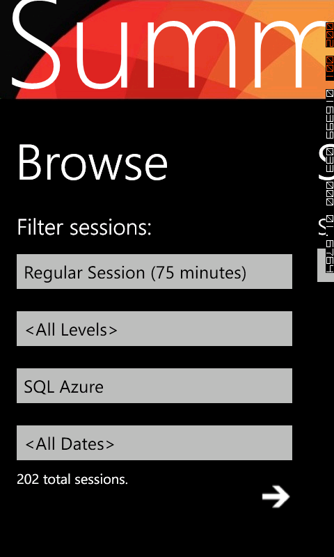
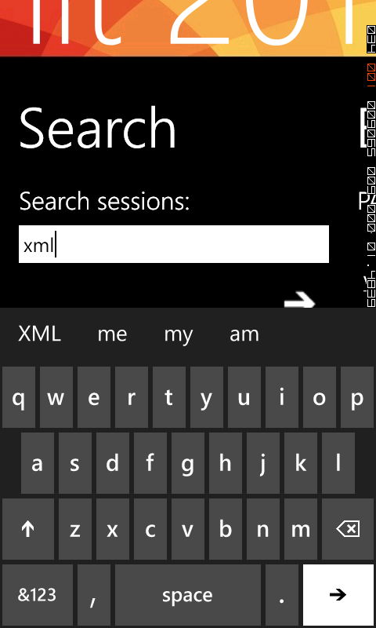
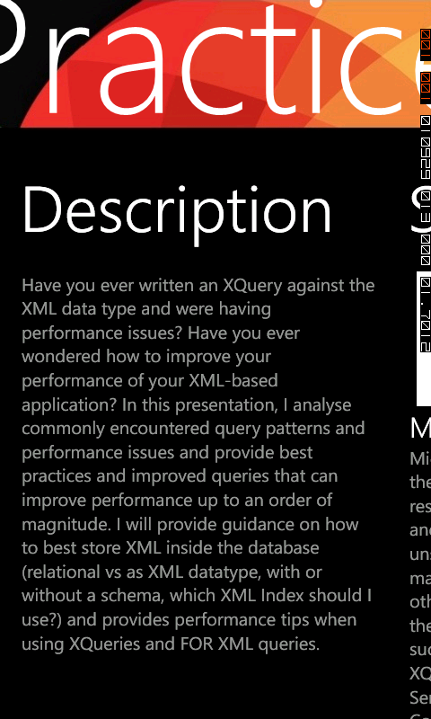

The PASS Events Browser is a Windows Phone 7.5 application that is available for download from the Windows Phone Marketplace. This application accesses the PASS events data service, a publicly available service, which implements the Open Data Protocol (OData). The PASS events data service is provided by the Professional Association for SQL Server—an independent, user-led, not-for-profit association dedicated to the SQL Server community. PASS sponsors numerous events around the globe. All of the session and speaker information for such events are published into an OData feed, which is consumed by the PASS Event Browser.
This sample highlights the following technologies and design patterns:
The PASS Event Browser is an OData-based Windows Phone 7.5 ("Mango") application that uses a single Model-View-ViewModel to access the PASS Events OData feeds. Session and speaker information from PASS events are published into an OData feed, which is accessed by the ViewModel. Session results are filtered by issuing queries against the OData service. In this version, LINQ queries are used on the client. This application checks for a network connection before querying the data service, and it also handles the light theme by displaying a reversed set of images.
The following are required to build and run the Windows Phone application:


Browse or search for sessions in the selected event
The application loads a set of filter values from the Sessions feed. This enables you to select one or more filters by category, level, track, and date. You can also submit search phrases—or use both at the same time. When executed, these searches query the data service and return a list of sessions.
Sessions page displaying the sessions with XML in the description or title
Selecting a session, displays session details, including speaker information, in the a details page:

Sessions detail panorama showing detailed session information, and session speaker.
Links from the session details page open the individual session information and ratings pages in the Summit site.
The graphical elements of the PASS Events Browser application derive from images that were created by and are owned by the PASS organization; they are being used in this application with the express written permission of PASS. Please do not use these images in your applications without obtaining independent approval from PASS.
{kind=link}
{kind=link}
{kind=link}
{kind=link}
{kind=link}
{kind=link}